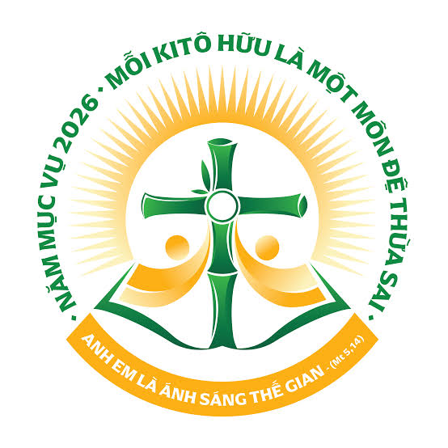

HỌC CÙNG GIÊSU

Trang chủ
Thông tin các Thánh
▼
Các Thánh tử đạo Việt Nam
Các Thánh khác
Ơn gọi Linh mục Giáo Phận
▼
Giáo tỉnh Hà Nội
▶
Giáo phận Lạng Sơn và Cao Bằng
Giáo Phận Hưng Hoá
Giáo Phận Bắc Ninh
Tổng Giáo Phận Hà Nội
Giáo Phận Hải Phòng
Giáo Phận Thái Bình
Giáo Phận Bùi Chu
Giáo Phận Phát Diệm
Giáo Phận Thanh Hoá
Giáo Phận Vinh
Giáo Phận Hà Tĩnh
Giáo tỉnh Huế
▶
Tổng Giáo Phận Huế
Giáo Phận Đà Nẵng
Giáo Phận Qui Nhơn
Giáo Phận Kontum
Giáo Phận Nha Trang
Giáo Phận Ban Mê Thuột
Giáo tỉnh Sài Gòn
▶
Giáo Phận Đà Lạt
Giáo Phận Phan Thiết
Giáo Phận Phú Cường
Giáo Phận Xuân Lộc
Giáo Phận Bà Rịa
Tổng Giáo Phận Sài Gòn (TP.HCM)
Giáo Phận Mỹ Tho
Giáo Phận Vĩnh Long
Giáo Phận Long Xuyên
Giáo Phận Cần Thơ
Dòng tu
▼
Dòng tu nam
▶
Giáo tỉnh Hà Nội
Giáo tỉnh Huế
Giáo tỉnh Sài Gòn
Tất cả dòng tu nam
Dòng tu nữ
▶
Giáo tỉnh Hà Nội
Giáo tỉnh Huế
Giáo tỉnh Sài Gòn
Tất cả dòng tu nữ
Tất cả dòng tu
Tu hội
GIÁO PHẬN PHÚ CƯỜNG
Giới thiệu
Tiến trình đào tạo
Tuyển sinh ơn gọi
Ơn gọi Linh mục Giáo Phận
▼
Giáo tỉnh Hà Nội
▶
Giáo phận Phát Diệm
Giáo phận Thái Bình
Giáo phận Bùi Chu
Giáo phận Bắc Ninh
Tổng Giáo phận Hà Nội
Giáo phận Lạng Sơn - Cao Bằng
Giáo phận Thanh Hóa
Giáo phận Hà Tĩnh
Giáo phận Vinh
Giáo phận Hưng Hóa
Giáo phận Hải Phòng
Giáo tỉnh Huế
▶
Giáo phận Qui Nhơn
Giáo phận Kon Tum
Tổng Giáo phận Huế
Giáo phận Đà Nẵng
Giáo phận Ban Mê Thuột
Giáo phận Nha Trang
Giáo tỉnh Sài Gòn
▶
Giáo phận Cần Thơ
Giáo phận Xuân Lộc
Giáo phận Bà Rịa
Giáo phận Đà Lạt
Giáo phận Vĩnh Long
Giáo phận Mỹ Tho
Giáo phận Phú Cường
Giáo phận Long Xuyên
Tổng Giáo phận Sài Gòn
Giáo phận Phan Thiết